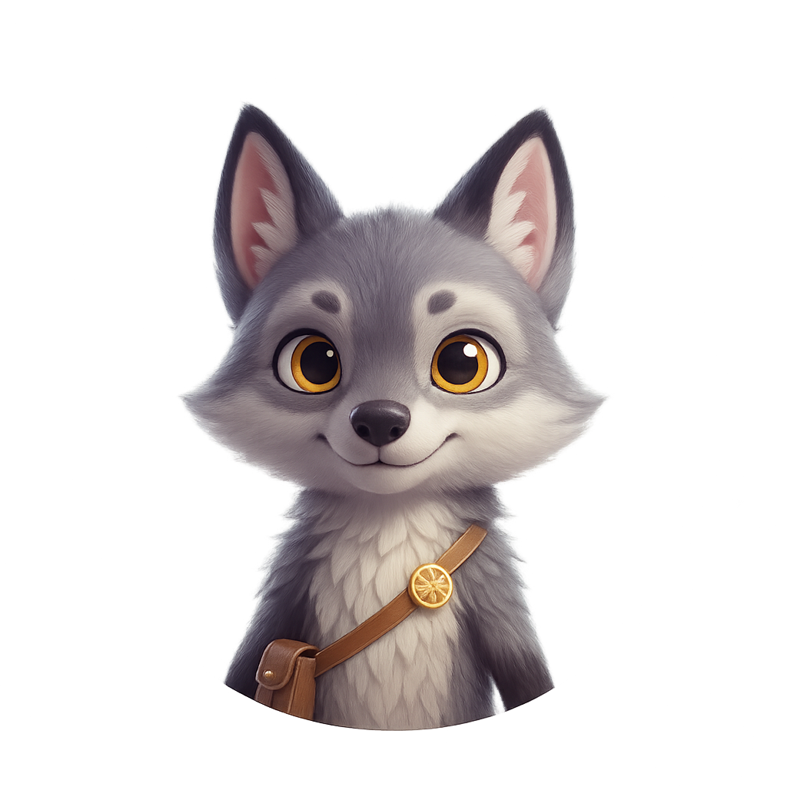
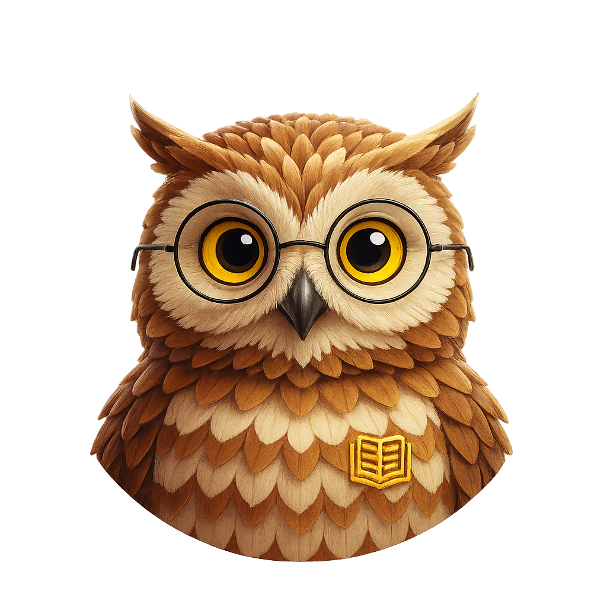

DreamSync Graba lo que la mente olvida.
La neurotecnología asusta.
El reto era hacerla deseable.
DreamSync nace como un proyecto conceptual basado en una premisa tecnológica del MIT: una interfaz cerebro-computadora (BCI) capaz de transformar la actividad neuronal REM en video. El desafío del proyecto consistió en tomar esta tecnología brillante, pero potencialmente aterradora, y diseñar un puente visual que la hiciera accesible y deseable para el usuario promedio.
El problema
La neurotecnología suele percibirse como un territorio frío, clínico y distante. Para el usuario promedio, la idea de 'grabar el cerebro' despierta temores instintivos de invasión y pérdida de control, evocando narrativas de una ciencia ficción distópica.
El objetivo
Transformar esa barrera del miedo en una invitación al autoconocimiento. El reto fue diseñar una experiencia que se sienta cercana, segura y fascinante, logrando que el usuario perciba a DreamSync no como un sensor intrusivo, sino como un aliado en la exploración de su subconsciente.
De lo abstracto a lo humano: Arquetipos que guiaron la estrategia.
Arquetipo 01
La terapeuta
"El inconsciente es la caja negra de la mente. Si pudiéramos verlo, el avance terapéutico sería exponencial."
Necesita credibilidadBusca validación objetiva. Cualquier toque "new age" la aleja.
Arquetipo 02
El guionista
"Los sueños son la última frontera narrativa. La única puerta al inconsciente que me permite crear historias completamente libres."
Necesita originalidadBusca narrativas que emergen solo en el mundo onírico. Pierde sus mejores ideas al despertar.
Arquetipo 03
El tecnófilo
"Hay un universo entero dentro de mí cuando duermo. Quiero el mapa para recorrerlo."
Necesita métricasBusca patrones con datos. Le faltan herramientas para hacer sus sueños medibles.
La alquimia del diseño: convertir lo técnico en mágico.
El proceso no fue lineal. Hubo una hipótesis inicial, un momento de honestidad sobre lo que no funcionaba, y un pivot que definió la identidad real de DreamSync.
Pasa el cursor — o arrastra — para comparar
"El cambio fue necesario: el diseño inicial se sentía distante. Mi objetivo era guiar y hacer sentir acompañado al usuario desde el primer momento. Evolucioné la landing hacia una experiencia inmersiva que sustituye la frialdad técnica por un refugio humano de exploración."
Tres guías. Te acompañan en el viaje de tu inconsciente.
La clave del producto final fue la integración de tres animales guía como pilares de navegación. Su presencia aporta calidez y cercanía, transformando una tecnología compleja en un recorrido humano e intuitivo sin sacrificar el rigor científico.

El mapache
Inspiración creativaPara guionistas y escritores.

El lobo
Exploración personalPara exploradores del inconsciente.

El búho
Análisis terapéuticoPara psicólogos y terapeutas.